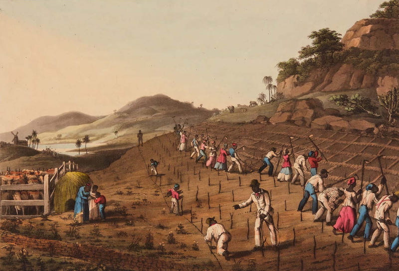
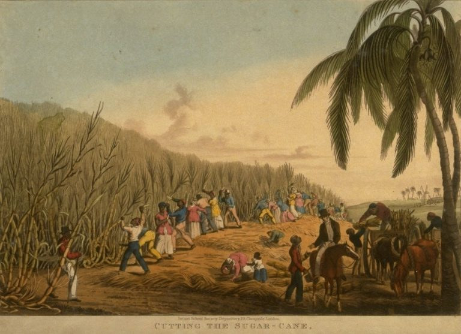
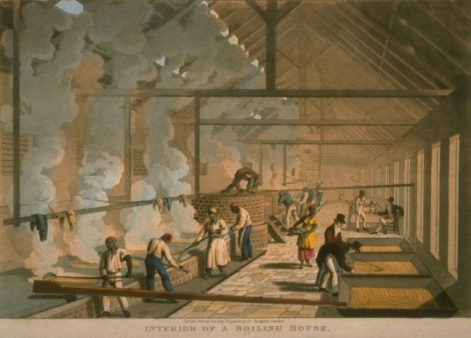

02 Sweet and Speed
갱 시스템 (The Gang System)

제1진
The Great Gang
“수확과 중노동”
대상:
가장 건강하고 힘 센 남녀 (주로 16~40세).
임무:
공장 고열, 구덩이 파기(Holing), 사탕수수 심기, 그리고 수확(Harvesting).

제2진
The Second Gang
“유지 보수”
대상:
청소년, 임산부, 혹은 1진에서 탈락한 40대 이상의 노동자.
임무:
제초 작업(Weeding), 거름 주기(Manuring) 등

제3진
The Grass Gang
“잡일 (Chores)”
대상:
아주 어린 아이들과 노인들.
임무:
가축 사료용 풀 뽑기(Grass weeding), 정원 관리 등 가벼운 잡일.
https://runaways.gla.ac.uk/minecraft/index.php/slaves-work-on-sugar-plantations/